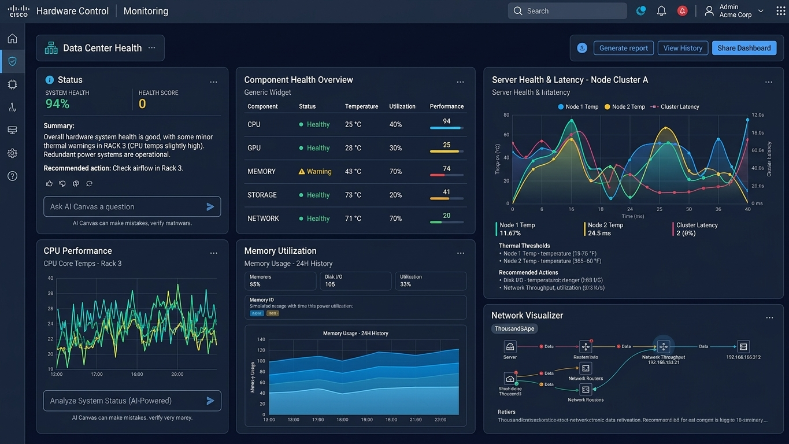

Tenha total controle. Monitore seus equipamentos Cisco com Argos.
Construído com um novo propósito. Desenhado para infraestrutura de grandes corporações.
Clientes Cisco utilizam Argos.
Ainda não monitora seus Switches, Firewalls e Routers? Cadastre sua empresa já!
/image 25.png)
/image 26.png)
/image 27.png)
/image 28.png)
/image 29.png)
/image 30.png)
/image 31.png)
/image 32.png)
Entenda como o Argos funciona.
1.O sistema Argos coleta periodicamente informações dos equipamentos monitorados, como utilização de CPU, memória RAM, armazenamento e recursos de rede. A coleta é realizada por um script de monitoramento, utilizando Python no processo de obtenção e tratamento das métricas.
2.Após a coleta, as métricas são armazenadas em um servidor da AWS, mantendo um histórico das informações. Isso permite consultar os dados posteriormente e analisar o comportamento dos equipamentos ao longo do tempo.
3.Os dados coletados são apresentados na dashboard por meio de gráficos, indicadores e KPIs. Assim, os profissionais responsáveis conseguem acompanhar individualmente os equipamentos e ter uma visão geral da infraestrutura monitorada.
4.O sistema compara as métricas com limiares previamente definidos. Quando uma condição de alerta é identificada, o evento é registrado, exibido na dashboard, e uma notificação é enviada para o responsável utilizando Slack para que uma ação possa ser tomada antes que um acidente aconteça.
A Cisco é lider no mercado de equipamentos e infraestrutura de redes. Já são mais de U$70 bilhões faturados.
E o que o software Argos faz é monitorar CPU, RAM, Disco, entrada e saída de pacotes dos seus equipamentos. Tudo para garantir Observabilidade. Tudo para garantir Manutenibilidade. Tudo para garantir Confiança.Cisco Nexus 9500

Switches
Com arquitetura Cloud Scale para fluxos de até 400GbE, o Nexus 9000 exige telemetria precisa. Monitorar CPU, RAM e I/O em tempo real evita buffer bloat e mantém a latência mínima em workloads de IA e nuvem.
Cisco Firepower 9300

Firewall
Suportando mais de 100 Gbps via security blades modulares, o Firepower 9300 atende trading e data centers. Acompanhar a saúde do hardware e da CPU previne gargalos no motor Snort 3 e impede quedas na segurança.
Cisco ASR-9006

Router
Operando com IOS XR para agregação em escala de terabits, o ASR 9000 exige controle rígido. O monitoramento de PPS, CPU e memória da tabela FIB/RIB previne a saturação do roteador e a queda de sessões BGP/MPLS.
Pensa em implementar o software Argos?
Entre em contato conosco!Nome
Empresa
Cargo / Função
Como o sistema Argos pode ajudar?
Duvidas Frequentes
Quais informações o Argos monitora?
+O sistema monitora métricas relacionadas a CPU, memória RAM, armazenamento e recursos de rede de equipamentos Cisco.
Há algum dado sensível e/ou sigiloso que é coletado dos equipamentos?
+Não! Os dados coletados pelo sistema Argos são puramente relacionados ao Hardware dos equipamentos e usados somente para compor a dashboard e enviar avisos em casos críticos. Nenhum dado sigiloso é coletado ou armazenado pelo sistema.
Posso consultar dados antigos dos equipamentos?
+Sim! As métricas são armazenadas para formar um histórico, permitindo comparar diferentes períodos, identificar tendências e analisar alterações no comportamento dos equipamentos.
O sistema Argos corrige problemas automaticamente?
+Não. O sistema é voltado apenas ao monitoramento e identificação de condições que necessitam de atenção. Toda e qualquer a ação ou decisão tomada com base nos dados coletados é responsabilidade do administrador do sistema.
Um alerta significa que o equipamento está com defeito?
+Não necessariamente. Fatores como picos de energia podem fazer com que os equipamentos alcancem momentaneamente o nível nescessário para disparar um alertae voltem ao normal depois. A condição deve ser analisada por um profissional especializado, considerando o contexto e o histórico do equipamento.
+ de 8.000 grandes corporações utilizam Cisco.
+ 6.000 grandes corporações monitoram suas infraestruturas com Argos.
Ainda não faz parte dessas empresas e quer entrar em contato? Entre em contato com nosso email: contato@argos.com